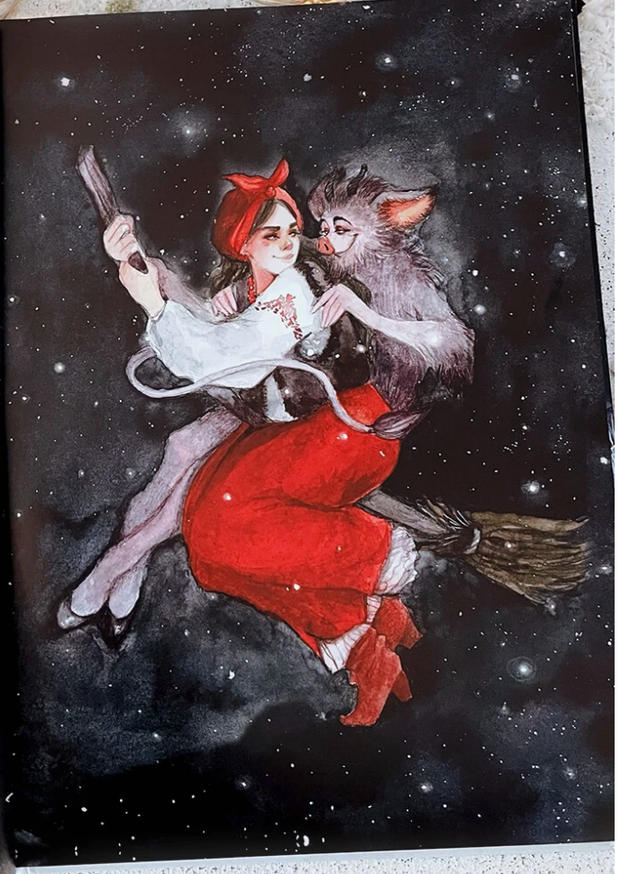

In contrast to the fantastic tale, like "Queen of Spades,"for Todorov, Gogol's story is a literary fairy tale
(belongs to the realm of marvelous).
The magic is unremarkable (in Max Luthi's terms): witches fly broom sticks, the devil steals the moon, etc.)
grotesque descriptions (sometimes humorous)
absurdist humor

Fig.1 - Illustration by artist Oksana Viktorova for Gogol's tale "Night before Christmas" (1832). https://oxanaviktorova.ru/